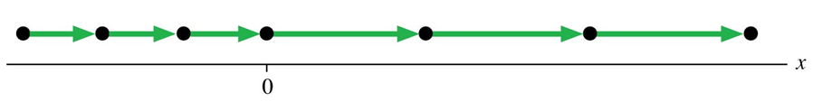
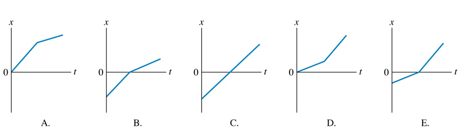
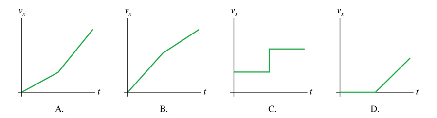

1.2 Velocity: Rate of Change of Position
Learning Goal
In this module you will:
- Understand the use of the particle model of motion
- Understand speed and velocity and the relationship between them.
- Calculate velocity and speed given initial position, initial time, final position, and final time.
- Determine velocity from a graph of position vs. time.
- Derive a graph of velocity vs. time given a graph of position vs. time.
The particle model of motion
In module 1.1 we learnt that displacement and distance indicate how far an object has moved, but this doesn't tell us anything about the time it took to move from one point to another. In order to quantify motion, we'll need to consider changes in time, which we call time intervals. A time interval Δt measures the elapsed time as an object moves from an initial position xi at time ti to a final position xf at time tf.
For the purpose of analysing motion, we often consider the object as if it were just a single point. An object that can be represented as a mass at a single point in space is called a particle (usually drawn as a dot). This particle model of motion allows us to see connections that are important but could be hidden if the entire real object was used.
 |
Simplifying motion using the particle model. The particles (dots) could represent any moving object (e.g. car or animal). The dots have been numbered 0, 1, 2,... to tell the sequence in which the frames were exposed. As the same time has elapsed between each particle, then the decreasing distance between the particles shows that the object is slowing down (i.e. less distance travelled in the same amount of time).
|
Check your understanding of the particle model
|
Two runners jog along a track. The positions are shown at 1 s time intervals. Which runner is moving faster?
|
 |
If an object is moving at a constant speed (neither speeding up or slowing down) then it is undergoing uniform motion. The two runners in the above question are in uniform motion.
Speed and Velocity
Speed and velocity are the quantities we use to describe how fast an object moves.
|
Speed is the distance travelled per unit of time.
Speed is always a positive scalar.
The average speed is defined as the distance travelled divided by the time elapsed (Δt)
|
 |
Things in motion often have variations in how fast they travel. The speed at any particular moment is the instantaneous speed. For example, a radar speed gun is a device used to measure the instantaneous speed of moving objects. It is used in law-enforcement to measure the speed of moving vehicles and is often used in sport, for things such as the measurement of bowling speeds in cricket, and tennis serves.
Worked example - Speed
|
What is the speed of the car and the bicycle?

|
Solution
The car moves 40 m in 1 s. Its speed is:
speed = distance / time interval = 40 m/s
The bike moves 20 m in 1 s. Its speed is:
speed = distance / time interval = 20 m/s
|
To fully characterise the motion of an object, we must specify not only the object's speed but also the direction in which it is moving. We know from Module 1.1 that the displacement of an object does contain information about the direction of travel. We can now work out an object's velocity.
|
Velocity is displacement per unit of time.
Velocity is a vector that has both a magnitude and a direction.
The average velocity is defined as the displacement divided by the time interval
|
 |
Worked example - Velocity
 |
The bikes have uniform motion but in different directions. The velocity of the bikes can be calculated using any time point (I've used the time interval between 2 and 3 s).
Bike 1: v = Δx / Δt = (60 - 40) / (3 - 2) = +20 m/s
Bike 2: v = Δx / Δt = (60 - 80) / (3 - 2) = -20 m/s
The two velocities have opposite signs because the bikes are travelling in opposite directions. By convention, a positive vector indicates motion to the right or upward, and a negative vector for an object moving to the left, or downward.
|
The position-versus-time graph
In addition to the particle model, we can also represent linear motion using a graph.
 |
This position-versus-time graph shows an object's position as a function of time. The object is moving horizontally, so we use the variable x to describe the motion. The motion graph shows that the object moves from a starting position (x = 0) at a time we choose to call t = 0 min. It moves 200 m in 3 minutes. Then there is a three minute period in which the distance travelled during each time interval becomes shorter. Then at t = 6 min, the distances travelled within each interval are longer.
|
 |
There is a relationship between the speed of the object and the slope of the graph - a faster speed corresponds to a steeper slope. The slope of the graph is defined as the ratio of the 'rise', the vertical change, to the 'run', the horizontal change. In other words, the slope of an object's position-versus-time graph is the object's velocity at that point in the motion.
|
Three important things can be derived from a position-versus-time graph.
- Determine an object's position at time t by reading the graph at that instant of time.
- Determine the object's velocity at time t by finding the slope of the position graph at that point. Steeper slopes correspond to faster slopes.
- Determine the direction of motion by noting the sign of the slope. Positive slopes correspond to positive velocities - motion to the right (or up). Negative slopes correspond to negative velocities - motion to the left (or down).
Using the tactics above we can convert the information from a position-versus-time graph into a velocity-versus-time graph.
 |
Deducing the velocity-versus-time graph from the position-versus-time graph. Calculating the gradient of the slope for the phases of motion in the position-versus-time graph we get periods of constant velocity. For example, for the first segment of motion:

As this velocity is constant, a graph of velocity versus time appears as a horizontal line at 1.0 m/s. Similar calculations can be done for the other segments of motion and combined to form a velocity-versus-time graph.
From the graph we can see the velocity is always positive as movement was always to the right. We can also see where the object went slower (t = 3-6 min) and faster (t = 6-9 min).
|
Check your understanding
|
Here is a motion diagram of a car moving along a straight road:

Which position-versus-time graph matches this motion diagram?

Which velocity-versus-time graph matches this motion diagram?

|
Activity
PRESCRIBED READING: Giambattista Physics (5th ed.). New York: McGraw-Hill, Section 2.2 - Velocity: Rate of Change of Position.
ADD TO YOUR GLOSSARY OF TERMS: Try to define and summarise terms and concepts as they are introduced. Add to it with each module you do. Include: uniform motion, particle model, speed, velocity.
ADD TO YOUR SUMMARY OF KEY EQUATIONS: Try to summarise key equations and make sure you know how to use the equations in numerical calculations. Add to the list with each module you do. This summary will be useful in the online quizzes and in the examination.
TRY THE FOLLOWING (attempt questions before looking at the answers):
1.2 Velocity- Rate of Change of Position practice questions
1.2 Velocity- Rate of Change of Position practice questions - ANSWERS
DISCUSSION: Use the TOPIC 1 forum for any questions or comments about this module.